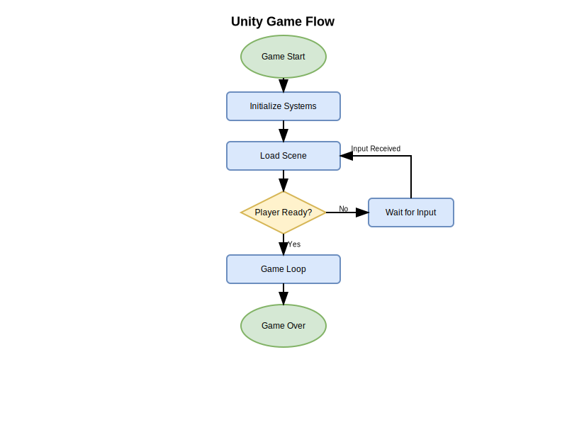

🎮 Unity Game Flow Diagram

🚀 Open Interactive Version
💾 Download .drawio File
📄 View Full Size SVG
How to use:
Interactive Version
: Opens Draw.io with zoom, pan, and edit capabilities
Download File
: Save the .drawio file to open locally in Draw.io
SVG Version
: Static, high-quality scalable version